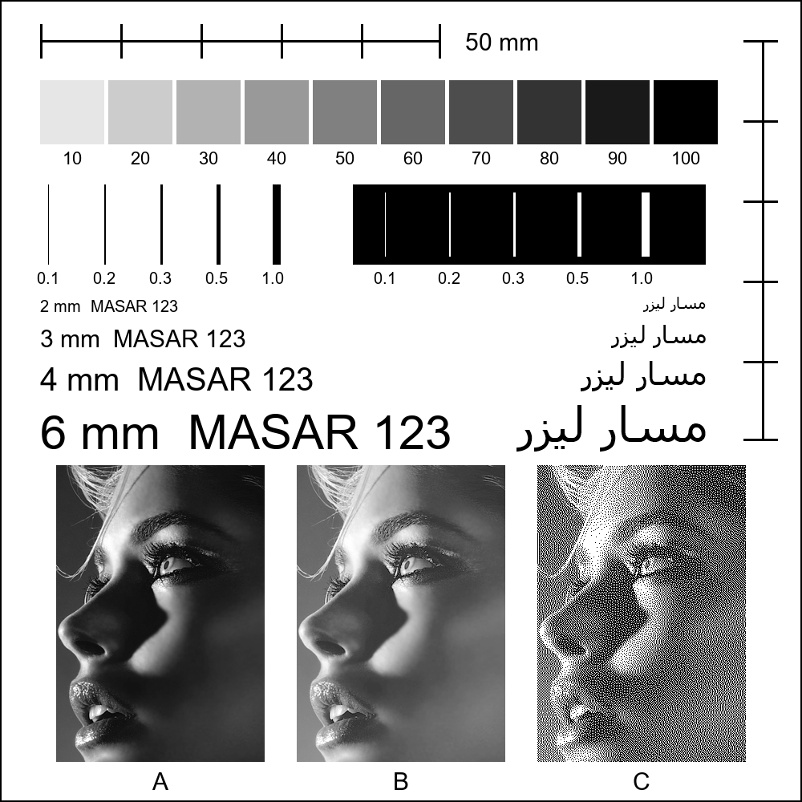

الملف: laser-test-100mm.png، مقاسه المطلوب 100×100 مم (1000×1000 بكسل بدقة 254 نقطة في البوصة).

| السؤال | خشب | أكريليك |
|---|---|---|
| المقاس الذي ظهر عند الاستيراد (مم) | ||
| طول المسطرة الأفقية على القطعة (المطلوب 50) | ||
| طول المسطرة العمودية على القطعة (المطلوب 50) | ||
| أول مربع رمادي يظهر، ومن أين تتشابه المربعات | ||
| أدق خط أسود ظهر (مم) | ||
| أدق فراغ بقي داخل المربع الأسود (مم) | ||
| أصغر نص مقروء: لاتيني / عربي (مم) | ||
| أفضل وجه: A أو B أو C | ||
| القدرة / السرعة / كثافة الأسطر | ||
| سماكة الخامة ونوعها |
A الصورة كما هي، وهي داكنة عمدًا. B مفتحة. C مفتحة ومنقطة. صوّر القطعتين بضوء جانبي وأرسل الصورتين مع الجدول.
على الأكريليك يظهر المحفور فاتحًا غالبًا، فقد يبدو الوجه معكوس الدرجات. هذا متوقع في هذه الجولة، والغرض ملاحظته.
drawing-simulator/photo-lineart-comparison/original.png، للاختبار الداخلي فقط.أسماء خيارات xTool Studio أعلاه لم تُطابق على البرنامج المثبت لديك.